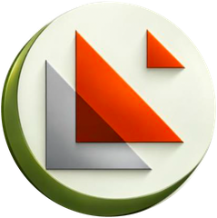

Controladoria
Informações gerenciais estruturadas para apoiar o planejamento, o acompanhamento de resultados e a decisão.
- Indicadores e relatórios gerenciais
- Análise de desempenho e resultados
- Controles e processos de gestão

CCA ConsultoriaControladoria & TecnologiaGestão financeira, processos, ERP e sistemas trabalhando juntos, para que a informação da sua empresa vire decisão e resultado.
Orçamento, fluxo de caixa, ERP TOTVS RM e sistemas lidos numa mesma estrutura.
Conte para a CCA qual é a necessidade do seu projeto.

A CCA Consultoria reúne controladoria, gestão financeira, ERP e desenvolvimento de sistemas para organizar e fazer evoluir os processos da sua empresa.

Cada área pode ser trabalhada de forma independente ou integrada, conforme o contexto e as prioridades do projeto.
Informações gerenciais estruturadas para apoiar o planejamento, o acompanhamento de resultados e a decisão.
O ciclo orçamentário organizado, da elaboração ao acompanhamento dos desvios entre o previsto e o realizado.
Visibilidade dos fluxos e das rotinas financeiras para dar controle operacional e previsibilidade à gestão.
Processos e informações organizados no TOTVS RM, ligando a operação ao que a gestão precisa enxergar.
Dados e documentos organizados para demonstrativos, conferências e rotinas de reporte financeiro.
Desenvolvimento e integração de soluções que conectam dados, processos e aplicações às rotinas da empresa.

O escopo e as etapas são definidos conforme a necessidade de cada contratação.

Trajetória em controladoria, auditoria, saúde, ERP e desenvolvimento, com projetos técnicos documentados e código aberto no GitHub.
Inventário de ativos de tecnologia com interface React e API Java/Spring Boot, autenticação e organização das informações.
Estudos práticos de JVM, memória, threads, concorrência e ferramentas de diagnóstico, com documentação técnica.

Controladoria, gestão financeira, prestação de contas, ERP ou tecnologia: escolha um canal ou deixe sua mensagem.